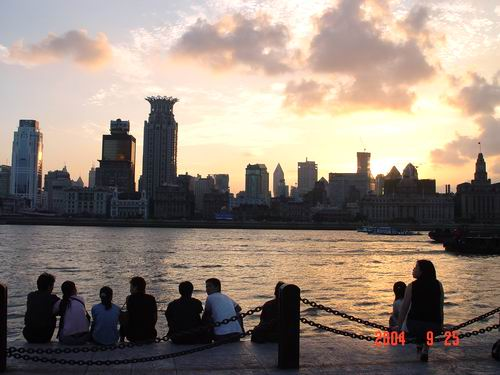
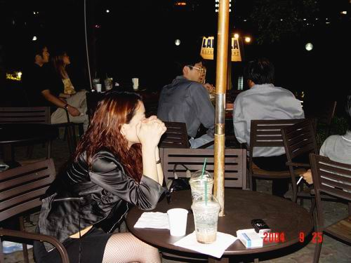
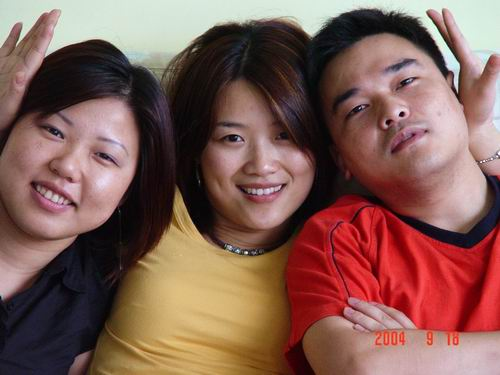
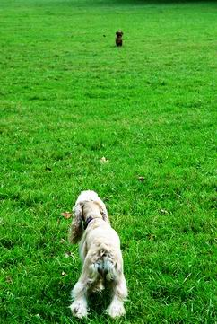
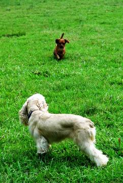

Archives : 2004-09
一天半的上海（三） @ Sep 30, 2004
还有什么比抚摩令人在凉爽的秋季更让人感到愉悦......友情、爱情还是亲情？
此时的我更愿感受亲情。
Steven和Angie和我相处的时间并不长，我们在秋的季节里相识，但之间隐隐蕴涵着的默契在这次上海之行时迸发着亲情的光芒。第一次去上海有人在火车站接我，那个人就是Angie。第一次走在上海街头不再觉得自己飘渺到虚无，尽然忘记自己是被人潮淹没的一粒尘埃，Steven是一个总为大家带来快乐和无限欢笑的男人，甚至连乘出租车也能让我们一路欢声笑语，直到腹肌有了收紧的痛。细想......我有多久没有敞开怀的大笑过？对于这样的相遇，我们只需微笑地互相凝视，所有的话语都将是不必要和多余的了。
25号的晚上...不...应该是26号的凌晨，在湾仔的中国餐馆吃完鸡汤打车到一家超市买矿泉水和口香糖，等我走出超市已不见他二人踪影，知道他们一定躲在前面的某处等着吓唬我，小心翼翼地顺着去Steven宿舍的路线走，见一发廊服务生笑眯眯的看我，立刻明白，开始准备与他们耗耐力，但心里琢磨大好时光岂能消磨在此？于是冲进发廊吓了他们一跳。
凌晨的夜空挂着明朗朗的圆月亮，这样的月光使我感到欣快而情绪饱满，这在我散漫的心板上，怎能不微温了一个时刻？月亮的法力使他二人变成了鹦鹉，连我的咳嗽他们也饶有兴趣地学习模仿着，只剩下我一个白痴似的笑到宿舍楼下。心里喜欢，却并不躁动，但仿如入秋的银杏树纷披一身金黄的雀儿，被摇地清响。
此行送Angie一件上衣赠Steven一本书作为礼物。大家洗漱后时间似乎也到了26日凌晨两点多钟。
Angie懒洋洋地趴在Steven瘦小的床上，问道：“书上的赠言都写了些什么啊？”
Steven端详片刻，缓慢而认真地回答：“爱你一万年。”
Angie依旧懒洋洋地说到：“那不是我说的话吗？！”
......


老态中秋 @ Sep 29, 2004
下午老牛发给我他唱的歌曲《七月》，录制在网络上的MP3，送给我的小朋友他的女友MAVIS的。那些旋律歌词、他的那种男性的声音涌出的不知道是感动还是为他们高兴的情绪，总之，很好很好的两个小人儿。
中秋节的中午大公司请单身职员叉饭，显得我们这些刚刚结婚没多久的年轻男女有些凄凉的吃着各自准备的午餐，呵呵~~午睡醒来后看见同办公室的几个单身同事红着脸没少喝酒地乐呵呵地回来上班，喊头昏喊喝多喊着还要喝到死的都有，这种状态已不属于我，有多长时间我不再烂醉如泥？~~心情的缘故。
晚上除了吃饭再也变不出什么新的花样来度过中秋节......吃饭吃饭吧......在姐姐家过中秋，爸妈已经去忙着准备佳肴了。中秋这天给jiajialing打了个电话，他现在每天除了学习还是学习，好在11月中旬放假可以回国呆三个月左右。昨天是Hank的毕业典礼，发来照片瘦了许多，年底也要回国了。日子过得真TNND的快！
昨天拿到往返HK的机票，花了不少银子，心疼啊.....2号飞HK。GRACE居然给我发来HK的日程安排计划，女博士果真做事认真！这次行程没有带给我一丝激动的前奏，我倒情愿在南京陪他工作，他这两天忙得头发盖着耳朵了都没时间去剪，心疼。
Jiajialing & Hank


一天半上海（二） @ Sep 28, 2004
9月25号去上海的早晨，怀着对化妆品的依赖心理涂了很多粉底，自认为很米地奔向火车站。南京火车站还没有修建好，周围的脏乱差能够证明怎样的一个南京市政府？怎样的一个南京城市最初给外地人的形象？想起有次开车到鸡鸣寺附近，路牌上豁然用拼音写着“shi zheng fu”那个指着道路的箭头在这些字母后面显得那么弱智。早几年南京的媒体就在宣传南京是个国际化大都市，晕~~瞧这路牌？瞧这火车站？瞧这卫生情况？表面文章尚且如此，若深究下去呢？
其实最近一心琢磨着自己的事儿特平静，可下面发生的情形却不能不让人愤怒到要骂TMD了。一两三岁的小男孩在软席车厢里跑来跑去，突然直接蹲在铺着地毯的走道上小便，还喷射出去一米多远，我压抑不住地大叫“天哪！”小孩的母亲居然笑嘻嘻地看着自己的孩子在大庭广众之下撒尿，周围居然坐着一群德国人，我靠！真TM耻辱！发短信告诉Angie，她回复两字：扁它。
一天半的上海（一） @ Sep 27, 2004
晚上9点前下的火车，回到了生活工作的南京。去上海还是第一次没有买东西回来，但是带回来很多快乐，虽然短暂但真实、不舍。在上海的时候正值2004 中国上海F1大赛，据说这次活动一共15万张票，有7万是卖给了外国观众。最贵的票价好象是RMB3000.00，我对F1从来没有关注过，自然没有愿望去观看这次比赛。
周日返宁的火车车厢里六个商务穿着的日本人坐在我前面，其中一个透过座椅的缝隙明窥暗窥着，不时用手卷着扯下来的领带。下车时他那羞涩而饱含深情得回眸突然令我惆怅不已......人生本就如此，我们都生活在上苍划好的圈内，只有这样我们才知道如何继续我们的生活！

– 浦东黄浦江边的Starbucks – 浦东黄浦江边夜景
– 浦东黄浦江边夜景

-相遇...分离...再难相遇...然而无从分离...
上海地铁站内人们顺着自己的路线一步步行走...
原引自《聯合早報》網站
(综合讯)据明报网报道，世界一级方程式赛车(F1)上海站刚结束，有国际赛车传媒界人士认为，上海购买此站的主办权费用过高。
根据颇有影响力的英国《F1商业》杂志最新刊登的数据，上海购买举办权费用每年高达3000万美元，但与上海一样在今年第一次举办F1的巴林却只付出了1800万美元。在亚洲举行的其他两站比赛中，日本铃鹿站的举办权费用只有950万美元，马来西亚雪邦站的费用为1500万美元，都比上海低。
欧美地区各个F1分站赛的举办权费用都只在1000万美元左右，有的分站甚至不需要购买举办权，如摩纳哥站和意大利蒙扎站。
《F1商业》的资深记者卡特勒近日对新华社记者说，如果与其他分站相比，上海购买举办权的费用明显过高，“与欧洲各站比赛相比，上海几乎付出了三倍的费用购买举办权，有点不可思议。”
琐碎家常 @ Sep 23, 2004
下午一个送快件的男孩和我们部门的同事发生口角，接着又发生了拳脚摩擦，接着这个男孩倔强的继续滋事，保安架着他下了电梯之后，他又跟着110来了~~
看：小孩打架找大人，大人打架找警察。蛮逗的......其实大人和小孩做的事情一样，不过是大人给表达附加了许多的掩饰而已。

昨天中午跑去金鹰购物中心买了些小孩用的被套衣服袜子和背包的礼物，到军区总医院看望表姐和她的宝宝。表姐的脸色不是太好，据说生女宝宝脸上没什么斑。女人真的是为社会和家庭做奉献的，表姐一直是个时尚女性，工作繁忙到预产期前十几天处理了所有订单才休息。原本她不打算要孩子的，属超个性的人，现在还是生了。不知道孩子的出生是否会改变原来的表姐？
宝宝的手指很纤细，醒了就要吃奶、喝水，真的很好玩呢！姨娘说：“来，抱抱她...”期间还帮她换了个尿不湿，哎呀，那个小巧和细嫩，令我爱不释手。抱着宝宝的时候姨娘说：“你小时侯我也是这么抱着你的。”哦~~温暖的亲情~~将我融化~~可爱的宝贝。
那只是一扇门 @ Sep 21, 2004
“我一直觉得，每个人的生活里都有一扇门，进了这扇门，你或许会得到一些东西，但是，这并不意味着你不能在门外得到的更多。那只是一扇门，是人们对生活道路的一种选择。”
—摘自《独家专访：甘露》
仍然在咳嗽，天气真的凉爽得让人感到冷了。
中午和姐姐去办到HK的通行证，回到办公室预订了往返HK的两张机票。这种类型的目的地是他所喜爱的，而我可能会在这样的城市里迷失在一片茫然中，就象在大连的那种感受，这不是心情不好或是哀伤之类的情绪，这让我想起一部电影《迷失的东京》。
上周末在BESS家聚会，最后玩“杀人”游戏。倾听他们表述思维，突然意识到这已经不是惯常思维所能诠释和理解的社会了，而身在其中的我们又有几个是眉清目秀红唇皓齿健康的娃娃？不知道具体什么时候，可能也就是最近一个多月的时间里，我心面对喧哗热闹俨然平淡不奇如止水般安静的停留在自己的意念里，虽然我的嘴角荡漾着快乐的笑容。
当心每离开这里一点，就越坚强一分。
You ‘d better have some fun… @ Sep 20, 2004
......我们年轻的时候，标准只有一种，那时侯黑白分明，是非很清。很想找一个很真的人，一生很真的爱情。后来世事动摇，我们一步步后退，对世界充满了怀疑，我在漫长的一段时间里，认为别人看到的都不是真实的自己。直到有一天我采访伏明霞，在“松霞恋”最为敏感的时期，我问她更在乎梁锦松爱的是她伏明霞呢？还是明星般的跳水皇后。这个时候从小离家在运动队长大的女孩，一刻都没有思考地回答：“这一切都是我，为什么要分开？”
......美丽和真实是共存的，有选择的相信，believe in beauty，未尝不是女性的智慧。生命是很短的，快乐亦然，让我们睁大眼睛去相信美好吧，如果真相令你困扰，那么甩一甩头发，把它忘了吧。
—转自中国时装
Susan,Angie & Steven

我的早晨 @ Sep 16, 2004
我的早晨突然很想念女友，很想念...是不是因为自恋的缘故？会想念和我差不多的女友？上海的三个皇帝妃子周末要来南京，光给我分了个丫鬟做，这次我要冒着被扁的危险篡位谋反，哈哈~~
精神病领导的世界 @ Sep 14, 2004
这两天是表姐的预产期，她长我两岁，30岁结婚。
之前她是很难结婚的那类女性，最后被一个很会哄的男人娶了去。想想再硬的女人都经不起男人的甜言蜜语。一直说不要孩子的她，现在居然也要生孩子了。听母亲讲她天天挺着大肚子在娘家，着急肚子里的孩子怎么还不出生？可以想象出她的那副神情，一定很有意思。B超做出来好象是个女宝宝。
上周开始干咳，这两天稍厉害些。
去大连途中总结出一句话：人类是世界上最可怕的动物。
*******************************************
下面转载北京女病人的一段话：
……专家又说话了。他问你的老板是不是一个受过良好教育、衣履整洁、雄心勃勃而又魅力十足的人。专家说小心了，他可能是精神病。并不是所有的精神病都是变态杀人狂，他们对金钱权利和性有着异乎寻常的渴求，语言表达能力很强。这些精神病的病态特征常被当做有进取心和领导能力的表现，使他们更容易进入管理层的高层。这是不是说，俺们在一个被精神病领导的世界里活着。
孤单大连 @ Sep 12, 2004

还有什么时候比现在孤单？一个人去泰国？一个人去云南？一个人去上海？还是一个人呆在家里......只有一段时间比这时候孤单：他辞职之后我仍然继续留在公司工作。
现在我坐在大连的网吧里写下这些文字，这里充满着各种熏人的气味，这些气味足以使人的脑袋发晕发痛。大概除了海水、沙滩、阳光之外，大连不是一个具有丰富游览内容的的旅游城市。大致每年的6-8月这里的酒店难订之外，其他时间都没我想象的那么拥挤。
昨天下午和今天上午我一个人从一个广场步行到另一个广场。城市够宽敞...女警脚穿马靴身材挺拔...很多广场...很多日本人和韩国人...中年女士化妆比例高于南京...服装品牌比南京要丰富，有些在欧洲街头看到的三、四流品牌在这里也能看得见专卖店，但价格高的惊人。由于步行疲惫昨天晚上一个人跑去“若石”捏脚，手法不如南京的“千子莲”令人舒服。当你询问有什么好吃的地方菜时，几乎所有的出租车司机都不约而同地回答：海鲜。这也是所有海滨城市的地方菜，所以我还能去吃点别的什么？那些大同小异的公园于我也没什么诱惑，上午花了一个多小时游览了星海公园里的海洋世界，感觉还不错。
当这个城市没有吸引力，并且结束所有工作的状况下，即使漫无目的的行走也打发不了那种孤单。这是我到达中国最北边的城市，这个令人孤单的城市。
北京女病人的Photo @ Sep 10, 2004
一定有很多人喜欢北京女病人的文字，今天Blogcn登出了她的照片，我很自然的想到Blogcn速度狂慢的原因和这个有关。
我和我的女友们一样都喜欢看她的文字，但最近没看了，不是刻意的也不是不想，就那么自然的事儿。也许和心情有关？上个月买了她的《病忘书》，读完后整个“看透”了，当然她文字表达和我平时嘴上说的或者意愿上希望的那种“看透”是两个概念。我所谓的“看透”有点口是心非的味道， 而北京女病人俨然是悠然自得的接受被看透的世界，并且能从中体味着乐趣......
有一次和朋友谈论到女病人，此君曰：“这个女人都是人精了，哪个男人敢要？”我恍悟：原来男人们都喜欢傻女人？希望女人比他们愚蠢。这是否是男人过于自卑的原因呢？

北京女病人自我介绍如下：
俺有很多很多心事儿，积得时间长了，就变成了心病。
俺没有钱去看心理医生，也没指望能遇见个《无间道》里那样妩媚多姿的心理医生，最主要的是俺不大相信心理医生。因为俺自己读完了弗洛依德啊荣格啊马斯洛啊什么的，俺知道自己的病症在哪儿。但是束手无策。
所以，俺开始写博客。哪怕是做一份病理档案出来也是好的。同是天涯沦落人，这个世界上一定也有很多过得不那么开心的人，事实上，没有什么人能永远快乐。
有句话说，幽默感从来和幸福无关。或许它只是俺们自我解嘲的工具。如果一个人每天拉长了脸做悲伤状幽怨状好象所有人都欠他钱，这么下去的话早晚神憎鬼厌。所以，那么心里哀伤，脸上也要挂着笑容，在惨淡的人生里寻找一些珍贵的快乐。所谓就着蜜糖吃毒药，就是如此吧。
整个博客日记乱七八糟，什么内容都有，想到哪儿说到哪儿。俺不希望被某一种风格束缚住，现实无非就是那个样子，但是在网络上，在精神世界中，一个人是可以随心所欲并且极大丰富的。这是俺们渴望的状态。
回顾一年来写博的经历，翻看从前写下的文字。俺发现博客完全记录了一个人的成长历程。生活已经在不知不觉中发生了变化。
在博客上，首次验证了“六个分离度”的理论。基本上，想和世界上任何一个人发生联系，从理论上说通过六个人就可以实现。于是兜兜转转，在博客上认识了一大票好朋友。无论是网络上还是现实中，这些人都走到一起，互相关注鼓励，让人觉得这个世界上并不是一个人的孤单。
翻看那些文字，看到自己的心路历程是在如何变化。从最初的愤怒、压抑、扭曲，到后来的平和、宽容、宁静。它记载了一条美丽的抛物线。我们最后都会和这个世界和解。
网络可以改变人的生活状态。从一个大学老师到银行职员再到某投资公司的项目管理人员，因为博客的原因，现在做成了一个和文字有关的自由职业者。生活其实满神奇的不是吗。不过能自由的做着自己喜欢的事情，想一想其实很快乐。
《病忘书》，已经由天津人民出版社结集出版。内容选编自03年8月到04年2月的搏客日记。至于这个，已经算意外之喜了。
来自Grace的图片 @ Sep 10, 2004
在港大读博士的好友给我发来这些图片，昨天获得奥林匹克冠军的中国运动员访问了香港大学。

我判决自己诚实 @ Sep 09, 2004
连续观看俄罗斯人质事件直播的血腥使我感到疲惫，于是关掉手机，在两天的休息中看的是周国平的《我的心灵自传—岁月与性情》。
周说他讲的是真话，如果是真的，我将仔细拜读，因为这是乌鸦嘴精神嘛。
周国平究竟是死板的哲学家还是细腻的散文家呢—看之前的疑问？
序的名称是：我判决自己诚实
“人只有在面对他人时才需要掩饰或撒谎，自欺者所面对的也不是真正的自己，而是自己在他人面前扮演的角色。在写这本书时，我始终设想自己是站在全知全能的上帝面前，对于我的所作所为乃至最隐秘的心思，上帝全都知道，也全都能够理解，所以隐瞒既不可能也没有必要。我对人性的了解已经足以使我在一定程度上跳出小我来看自己，坦然面对我的全部经历，甚至不羞于说出一般人眼中的隐私。我的目的是给我自己以及我心目中的上帝一个坦诚的交代，我相信，惟其如此，我写下的东西才会对世人也有一些价值，人们无论褒我还是贬我，都有了一份值得认真对待的参考。
当然，我毕竟还活在这个世界上，与这个世界有着千丝万缕的联系。因此，事实上我不可能说出全部真话，只能说出部分真话。我对自己的要求是，凡可说的一定要说真话，决不说假话，对不可说的则保持沉默。所谓不可说的，其中一部分是因为牵涉到他人，说出来可能对他人造成伤害。我在这个世界上没有私敌，我不愿意伤害任何人。
我的人生观若要用一句话概括，就是真性情。我从来不把成功看作人生的主要目标，觉得只有活出真性情才是没有虚度了人生。所谓真性情，一面是对个性和内在精神价值的看重，另一面是对外在功利的看轻。我在回顾中发现，我的这种人生观其实早已植根于我的早年性格中了，是那种性格在后来环境中历练的产物。小时候，我是一个敏感到有些病态的孩子，这种性格使我一方面极为关注自己内心的感受，另一方面又拙于应付外部世界，对之心存畏怯和戒备。”
posted by 乌鸦嘴
两年之前，两年之后 @ Sep 08, 2004
- 今天是神奇的一天：
在车站，擦肩偶遇两年前的英文老师，依然瘦削，目光直截，俩年前，她是35岁单身女人， 瓜葛于已婚男人的恋情。两年前，她只涂暗色唇膏，不染发；而今，唇膏正粉红，秀发正灿灿。未能相识，就已经擦肩而过，化妆防衰老…不知伊的生活如何变化。
在厕所的邂逅，诚然气氛不佳，但也坦荡，充满Shock, 又是两年前的旧人，当年甚有不屑的刁蛮妇女型人物，爱八婆，没有责任感，扮相平庸；如今，如今，伊竟然大走Sexy 路线，扮相大改前朝遗风，走路如花滥坠…… 只是我直视其三十秒，而毫无察觉，而彼此打过招呼后几乎迭出卫生间。
- 两年，年两
忽然之间，生活中充满了两年的概念，电话被绑了两年的plan, 牙上带上了两年的braces, 两年后的毕业，交了很多为期两年的deposit. 两年，两年，我不知道会怎样。又回到这种规律有节制的生活中，循规蹈矩中未尝没有快乐，没有小聪明，没有小瓜葛，没有颠沛不堪，没有心思不已，对于我，是件好事。
仿佛是一回来，才发现对于我们的一小群人的niche Job market竟异常的好，许多人急急毕业，许多人谈及计划。从一个从中学开始有计划的“一步一步”流程产品，直至今天无言相告，只能回答一句：I’m open to all the options. 大体就是说我什么地方都不介意去，什么工都能干。
- 从Capital Budgeting到牙套
对于一个超龄的青年，开始套牙未尝不是一种折磨。于是闲话几句：
The capital budgeting theory though viewed as Panglossian suggests that market economic activities (including capital investing decisions) will produce a sit of outcomes in which firms maximize profits while producing goods and services at the lowest possible costs and investors/consumers optimize return on investment and maximize utility.
简单点说就是，预期与衡量付出与回报，在尽可能减少投入的同时最大化回报，同时使预期的回报周期与投资目标相匹配。
所以在你年龄不正当，时间不充裕，地点不便宜的地方，有着一口人人都说还可以牙，还要坚决地套下去，那么我只愿意说：
如果一件事，我付出两倍的时间，承受两倍的痛苦，付出远多于两倍的价格，还是愿意做，那是因为我想了前因后果，联系了capital budgeting的原理，依然觉得值，于是就去做，再痛再饿，也不后悔。
于是，我们说：很多的东西，我们付出了很多的东西，时间，连同感情都搭上，如果依然觉得有超出寻常的回报，那么我愿意把什么都拿来付出。
posted by lynne
邂逅 @ Sep 07, 2004


穿越...... @ Sep 03, 2004
说出那样的话的确残忍，但无奈。
**************************************
晚上回家后又去练车了，绕着一个长长的花坛兜圈子找车感。开了朋友周一才提的新车M6，车上还有David和Jeff当老师。M6的刹车比较敏感，方向盘较紧，开始不是很习惯，迷上M6钛合金操作面板。
国庆节想去韩国，很想去韩国的原因是因为韩星权相佑，前两天才看了他主演的《神父作业》。本想拖着他，但他工作忙要加班，拖老妈...她却建议我和姐姐去香港，正好姐夫那段时间在香港，住宿会比较方便，这样我还能去看看Grace。不知道又要花掉多少银子？